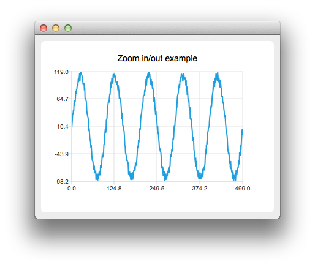
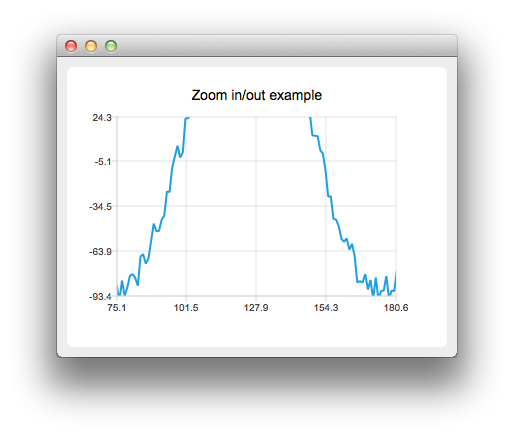

Zoom Line Example
The example shows how to create your own custom zooming effect.
The example shows how to create your own custom zooming effect with QRubberBand by using a mouse and how to use touch gestures for paning and zooming.


Running the Example
To run the example from Qt Creator, open the Welcome mode and select the example from Examples. For more information, visit Building and Running an Example.
Customizing Zooming Effects
Let's first create a line series with some example data.
auto series = new QLineSeries;
for (int i = 0; i < 500; i++) {
QPointF p((qreal) i, qSin(M_PI / 50 * i) * 100);
p.ry() += QRandomGenerator::global()->bounded(20);
*series << p;
}
Then we create a custom chart view by deriving from QChartView:
class ChartView : public QChartView
We override mouse and key event handling
protected: bool viewportEvent(QEvent *event); void mousePressEvent(QMouseEvent *event); void mouseMoveEvent(QMouseEvent *event); void mouseReleaseEvent(QMouseEvent *event); void keyPressEvent(QKeyEvent *event);
Then we implement a custom logic for mouse and key events. For example pressing the '+' key will zoom in and pressing the '-' key will zoom out.
void ChartView::keyPressEvent(QKeyEvent *event) { switch (event->key()) { case Qt::Key_Plus: chart()->zoomIn(); break; case Qt::Key_Minus: chart()->zoomOut(); break;
We also create our own QChart:
class Chart : public QChart
Where we can handle the gestures:
bool Chart::sceneEvent(QEvent *event) { if (event->type() == QEvent::Gesture) return gestureEvent(static_cast<QGestureEvent *>(event)); return QChart::event(event); } bool Chart::gestureEvent(QGestureEvent *event) { if (QGesture *gesture = event->gesture(Qt::PanGesture)) { auto pan = static_cast<QPanGesture *>(gesture); QChart::scroll(-(pan->delta().x()), pan->delta().y()); } if (QGesture *gesture = event->gesture(Qt::PinchGesture)) { auto pinch = static_cast<QPinchGesture *>(gesture); if (pinch->changeFlags() & QPinchGesture::ScaleFactorChanged) QChart::zoom(pinch->scaleFactor()); } return true; }
Note that you will need to call grabGesture() to both QMainWindow and QChart.